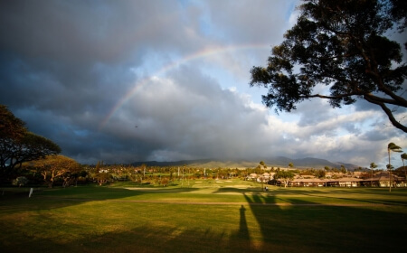
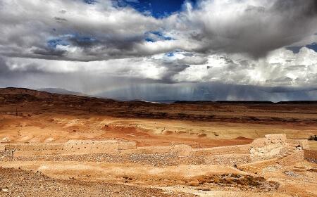
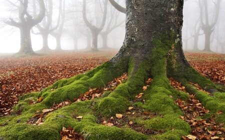
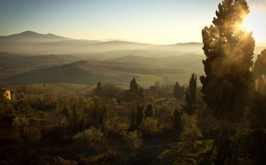
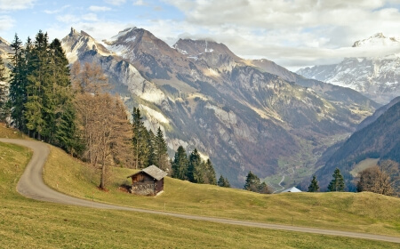
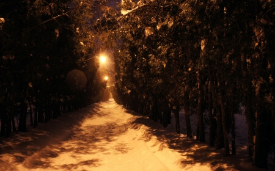
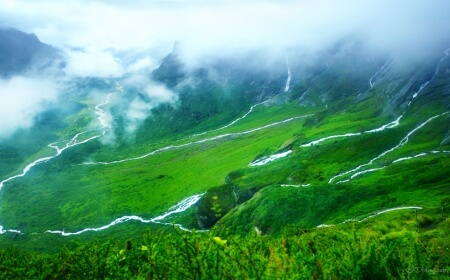
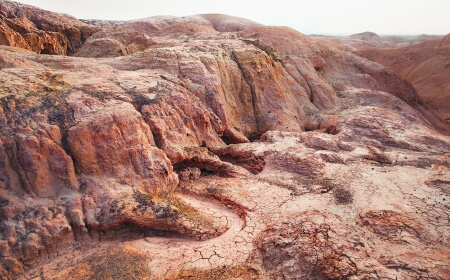

Saturday - Preston Pancakes in the Park! 9:00 a.m/ Saturday at the city park.
With a Chance of Sun
bringing you a brighter day
Weather Gallery

Springtime rainbow over Fish Haven Idaho

Storm is a brewing just outside of town, hope it wont ruin the founders day parade.

From Fish Haven: The nearby forest has some of the coolest trees.

Mist over the foothills, you might think this is Apalachia, but this is our own backyard.Is there anything better than the leaves changing in the fall?

As you get up into the mountains the mountain valleys offer breathtaking views.

Who even knew old man Browder's apple orchard could be so charming at sunset.

Can you ever get enough of those misty mountain valleys?

A story from the quary, that even after springs devestating rains, nature containsan equal measure of beauty amidst the chaos.